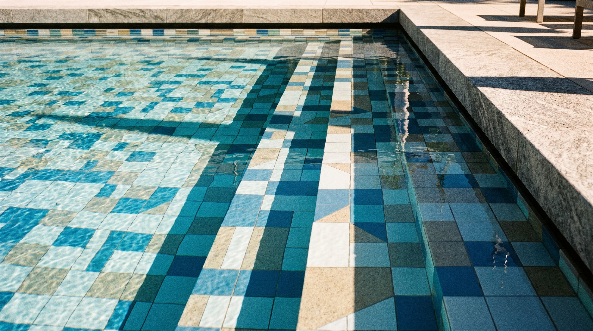

🥤
折射實驗室・吸管真的斷了嗎？
光從空氣進到水裡，方向會改變
站 1・吸管放進水裡
💧 水位
先把水倒進去，看吸管會怎樣

真實照片：吸管看起來在水面「斷」了——其實沒斷，是光轉彎
站 2・消失的硬幣
眼睛在碗邊，硬幣被碗壁擋住看不到……倒水試試

真實照片：倒水後硬幣「浮」上來了——光在水面轉彎，把硬幣的影像抬高
站 3・光線轉彎模擬器
🔦 入射角40°
拉一拉：光從空氣進水，往法線靠近，這叫折射 · Refraction

真實照片：游泳池看起來比實際淺——一樣是折射，下水前要小心
任務 1 / 3